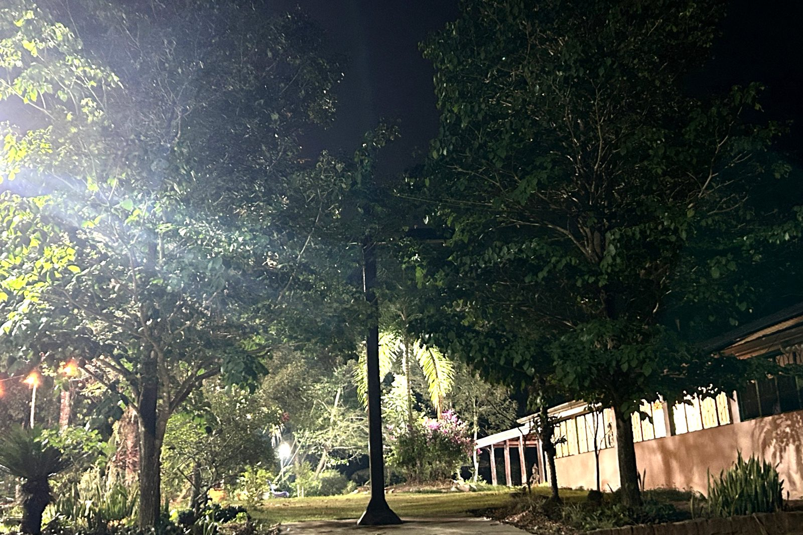

Ji-Paraná, Rondônia · desde 1991
Onde a luz
encontra acolhimento
A Chácara Divina Luz é a casa do Centro de Regeneração Espiritual Casa de Jesus e Lar de Frei Manuel. Há mais de três décadas, reúne famílias em torno da fé, da convivência e do cuidado com quem precisa.
- 1991
- Fundação, em 13 de fevereiro
- 80
- Famílias cadastradas
- 300
- Atendimentos por mês, em média
- 4
- Fundadores que ainda frequentam
Apresentação
Quem conta é
o Fernando
O dirigente do centro apresenta a Chácara, a comunidade e o trabalho que acontece aqui, nas palavras de quem acompanha essa história desde o começo.
Sobre
Um centro espírita de linha apostólica, fundado em 1991, que reúne famílias de Ji-Paraná e de cidades vizinhas em torno da fé, da disciplina e do cuidado com o outro.
O Centro de Regeneração Espiritual Casa de Jesus e Lar de Frei Manuel funciona na Chácara Divina Luz, no bairro Nova Londrina. Hoje são cerca de 80 famílias cadastradas, a maioria de Ji-Paraná e outras de Porto Velho, Ouro Preto do Oeste, Jaru e Cacoal.
Além dos membros, a casa recebe visitantes e pessoas que chegam em busca de ajuda espiritual. As normas são claras para quem frequenta: não se bebe, não se fuma e não se usa drogas.
-
Acolhimento
Qualquer pessoa pode conhecer o centro e assistir aos trabalhos.
-
Cuidado
Quem deseja participar passa por conversa, aconselhamento e acompanhamento.
-
Discrição
A privacidade de cada pessoa que frequenta a casa é respeitada.
-
Comunidade
Mutirões e ação social feitos pelos próprios membros.
Trajetória
Mais de três décadas em Ji-Paraná
-
1991
A fundação
Em 13 de fevereiro, um pequeno grupo funda o centro em Ji-Paraná. Quatro dessas pessoas ainda frequentam a casa.
-
A Chácara
Um terreno doado
O terreno da Chácara Divina Luz chega por doação, e a comunidade ganha um espaço próprio para crescer.
-
Ação social
Além dos trabalhos
O centro atende egressos do sistema prisional em um projeto de reinserção e colabora com a APAC sempre que é convidado.
-
Hoje
Uma comunidade de famílias
Cerca de 80 famílias, quatro sessões por mês e por volta de 300 atendimentos mensais.
Ação social
“Eu preciso fazer para quem precisa, e não para quem quer.”
A ajuda que chega a quem procura
O trabalho assistencial nasce da procura. O centro não mantém convênios fixos e escolhe ajudar onde a necessidade é real.
-
Cestas básicas e doações
Famílias que procuram o centro recebem cestas básicas e outras doações, conforme a necessidade.
-
Reinserção social
Um projeto com o sistema prisional atendeu egressos e condenados no retorno à vida em sociedade.
-
Atendimentos na APAC
O dirigente atende na APAC de Ji-Paraná sempre que é chamado.
-
Mutirões comunitários
Os membros se reúnem para cuidar do espaço e das atividades da Chácara.
Fotos
Um passeio pela Chácara
Toque ou clique em uma foto para ampliar.




Visite
Antes de vir
- 01
A comunidade é aberta a quem quiser conhecer e assistir aos trabalhos.
- 02
Para participar, é preciso conversar antes com o dirigente e passar pelo acompanhamento da casa.
- 03
No espaço não se bebe, não se fuma e não se usa drogas.
- 04
Fotos e filmagens só com autorização. A privacidade de quem frequenta vem em primeiro lugar.